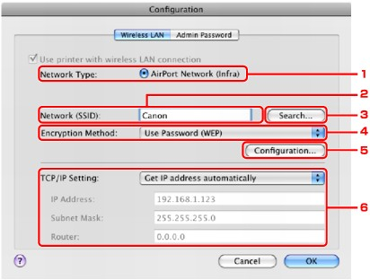
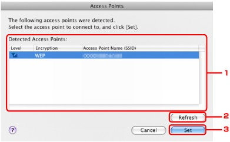
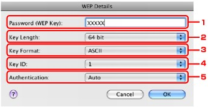

To change the wireless network settings of the printer, connect the printer and the computer with a USB cable temporarily. If you modify the wireless network settings of the computer over wireless connection without USB connection, your computer may not be able to communicate with the machine after modifying the settings.
 Note
Note-
Select Wireless LAN active in Change wireless/wired under LAN settings on the Operation Panel to change the settings in the Wireless LAN sheet.
 Changing the Machine Settings on the LCD
Changing the Machine Settings on the LCD
-
Start up IJ Network Tool.
-
Select the printer in Printers.
-
Click the Configuration button.
-
Click the Wireless LAN button.
Click OK after changing configuration. A dialog is displayed asking you for confirmation before the settings are sent to the printer. If you click OK, the settings are sent to the printer and the Transmitted Settings dialog is displayed.
-
Network Type
- AirPort Network (Infra)
-
Connects the printer to the wireless LAN with an access point.
-
Network (SSID)
The network name (SSID) of the wireless LAN is displayed.
Note-
Enter the same SSID that the access point is configured to use. The SSID is case-sensitive.
-
-
Search
The Access Points dialog is displayed to select an access point to connect to.
Note-
When IJ Network Tool runs over a LAN, the button is grayed out and cannot be selected. Connect the printer and the computer with a USB cable temporarily to change the settings.
-
-
Encryption Method
Select the encryption method used over the wireless LAN.
 Important
Important-
If all encryption types of the access point, printer, or computer do not match, the printer cannot communicate with the computer. If the printer cannot communicate with the computer after the encryption type of the printer was switched, make sure that encryption types for the computer and the access point matches that set to the printer.
How to Set a WEP/WPA/WPA2 Key -
If you connect to a network that is not protected with security measures, there is a risk of disclosing data such as your personal information to a third party.
- Do Not Use
-
Select to disable encryption.
- Use Password (WEP)
-
Transmission is encrypted using a WEP key you specified.
If a network password (WEP) has not been set, the WEP Details dialog is displayed automatically. To change WEP settings set before, click Configuration to display the dialog.
WEP Details dialog - Use WPA/Use WPA2
-
Transmission is encrypted using a network key you specified.
The security has been strengthened more than WEP.
If a network key has not been set, the Authentication Type Confirmation dialog is displayed automatically. To change network key settings before, click Configuration to display the WPA Details dialog or WPA2 Details dialog.
Changing the WPA or WPA2 Detailed Settings
-
-
Configuration
The detailed settings dialog is displayed. The network password (WEP) or the WPA/WPA2 key selected in Encryption Method can be confirmed and changed.
- For details on WEP setting:
- For details on WPA or WPA2 setting:
-
TCP/IP Setting
Sets the IP address of the printer to be used over the LAN. Set a value appropriate for your network environment.
- Get IP address automatically
-
Select this option to use an IP address automatically assigned by a DHCP server. DHCP server functionality must be enabled on your wireless LAN router or access point.
- Use following IP address
-
If no DHCP server functionality is available in your setup where you use the printer or you want to use a particular IP address, select this option to use a fixed IP address.
-
-
Access Points dialog
-
Detected Access Points
The signal strength from the access point, encryption type, name of access point, and the radio channel can be confirmed.
Important-
If you connect to a network that is not protected with security measures, there is a risk of disclosing data such as your personal information to a third party.
Note-
Signal strength is displayed as follows.
: Good
: Fair
: Poor -
Type of encryption is displayed as follows.
Blank: No encryption
WEP: WEP is set
WPA: WPA is set
WPA2: WPA2 is set
-
-
Refresh
Click to update the list of access points when your target access point is not detected.
If the target access point is set to a closed network (the stealth mode), click Cancel to return to the previous screen and enter the network name (SSID) in Network (SSID).
Note-
Make sure that the access point is turned on.
-
-
Set
Click to set the network name (SSID) in Network (SSID) on the Wireless LAN sheet.
Note-
Depending on your settings, WEP Details dialog, WPA Details dialog, or WPA2 Details dialog appears when you click the Set button. In the dialog, configure the details to use the same encryption settings set to the access point.
-
Access points that cannot be used by this machine (including those configured to use different encryption methods) are displayed grayed out and cannot be configured.
-
-
-
WEP Details dialog
Specify the printer WEP settings. When changing the password (WEP key), the same change must be made to the password (WEP key) of the access point.
-
Password (WEP Key)
Enter the same key as the one set to the access point.
The number of characters and character type that can be entered differ depending on the key length and key format.
Key Length
64 bit
128 bit
Key Format
ASCII
5 characters
13 characters
Hexadecimal (Hex)
10 digits
26 digits
-
Key Length
Select either 64 bit or 128 bit.
-
Key Format
Select either ASCII or Hex.
-
Key ID
Select the Key ID (index) set to the access point.
Note-
When the printer is connected to an AirPort Base Station via a LAN:
When the printer is connected to an AirPort Base Station via a LAN, confirm the settings in Wireless Security of AirPort Utility (or AirPort Admin Utility).
-
Select 64 bit if 40 bit WEP is selected for the key length in the AirPort Base Station.
-
Select 1 for Key ID. Otherwise your computer will not be able to communicate with the printer via the access point.
-
-
-
Authentication
Select the authentication method to authenticate the printer's access to the access point.
Normally, select Auto. If you want to specify the method manually, select Open System or Shared Key according to the setting of the access point.
Important-
If the printer cannot communicate with the computer after the encryption type of the printer was switched, make sure that encryption types for the computer and the access point matches that set to the printer.
How to Set a WEP/WPA/WPA2 Key
-
-